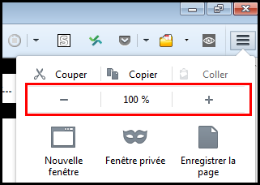

Essential criteria for the development
1. Set a title for each page
Target: everyone and especially people with visual disabilities.
When: as of conception and during development.
Description:
Give each page a title that is specific to it and which reflects its content or function (<title> tag).
The page title is the first element read by a screen reader, it must help to formally identify the page where you are.
Checklist:
- Even if there is no rule, in general (opening many tabs in multiple applications), we go from the most specific information to the least specific (e.g. title of the current page - name of the site). When opening a multitude of applications, the approach is different, in this case we will prefer going from the least specific information to the most specific (e.g. name of the site - title of the current page).
- When the content of the page is dynamic (displaying the result of a search, errors in a form, user adding content…), the title of the page should reflect this change.
Users’ goal:
Allow users to identify the topic of a page, find and get a clear idea of the content of the page without having to read it. In particular, it is the first element vocalized by a screen reader.
Do:<title>Home - Corporate web site of Orange</title>
Don’t:<title>Home</title>
Reference: WCAG 2.4.2
2. Give a title to headings
Target: everyone and especially people with cognitive limitations, reading difficulties and visual disabilities.
When: as of design, during content writing and development.
Description:
One must identify the heading tags (h1 to h6 HTML tags) used to structure the content of the pages.
Visually impaired people browsing with a screen reader can access the list of headings in the page to navigate quickly.
Just like in a Word document, it is possible to use the table of contents only if the heading tags have been properly set within the document.
Checklist:
- The headings must be relevant, reflect the structure of the information contained in the page.
- There must be no break in the heading hierarchy (we cannot jump from a
h2title to ah4title). - You can use several
h1headings per page (Don’t exceed two in most cases). - Hidden tags are dismissed by screen readers (
visibility: hidden;,display: none;oraria-hidden). - The dynamically-generated content must also meet this requirement.
Goal:
- For all users: improve the structure of the page and its contents.
- For search engines: improve SEO.
- For users with visual disabilities, cognitive limitations or reading difficulties: easy navigation and access to content.
Do:
Page with consistent and relevant headings:
(Heading 1) Home – Orange
(Heading 2) News
(Heading 2) Fibre broadband is coming!
(Heading 3) Check eligibility
Don’t: Page with a break in the heading hierarchy h2 → h4:
<h1>Home – Orange</h1>
<h2>News</h2>
<h2>Fiber broadband is coming!</h2>
<h4>Check eligibility</h4>
Tool :
HeadingsMaps extension, available for Chrome and Firefox, extract and display page titles for the current page.
Reference: WCAG 1.3.1
3. Provide enough contrast between text and background
Target: everyone, especially the mobile and tablet users, people with visual impairments, experiencing reading or attention difficulties and elderly people.
When: as of design and during development.
Description:
The contrast between the text and its background should be high enough.
Insufficient contrast level will have detrimental impact on users with visual difficulties and for mobile and tablets users in a very bright environment.
Don’t:
The label “film | 20h40…” does not have enough contrast. It will not be readable by all users.

Checklist:
- The contrast between the colour of the background and the text must be 4.5:1 minimum and also for text on an image carrying information.
- For applications used primarily in mobile web or in mobility, the contrast level of the main elements must be 7:1 in order to ensure a good readability for all.
- Links should be easily identifiable from to the rest of the text.
Users’ goal:
Ease of reading for all users, especially the visually impaired, or people in a very bright environment (outdoors).
Tool:
The Colour Contrast Analyser application can quickly measure colour contrast levels (free for Windows and Mac).
Reference: WCAG 1.4.3
4. Do not use colour or sensory characteristics as the unique source of information
Target: everyone, especially the colour-blind and more generally people with visual impairments, cognitive limitations, hearing impairments and elderly people.
When: as of design and during development.
Description:
Do not use colour or sensory characteristics (shape, size, sound, direction, visual localization …) as the only way of conveying information, indicating an action, requesting a response or distinguishing an element. The information provided by a colour change or a sensory characteristic must be completed with textual information (alternative) or / and semantic structuring.
Example:
For a pie chart, where each part is coloured differently, you could add different pattern fills to identify them without colour.
Do: 
Don’t: 
This example is not valid because the information is conveyed only by colour.
Checklist:
- Take a screenshot and convert it in black and white. The loss of colour should not cause difficulty while navigating, nor cause loss of information.
- Turn off the speakers, the level of information should remain the same.
Users’ goal:
Allow users not distinguishing colours or sensory information (colour blind, visually impaired, hearing impaired, mobile users in bright environment or in noisy environments …) to access the same information by other means.
Reference: WCAG 1.4.1
5. Use lists
Target: everyone, and especially people with visual impairments and cognitive limitations.
When: as of design and during content writing.
Description:
Pages, if required, must contain semantically relevant lists. Add semantics to the HTML content using the following tags:
olfor ordered listsulfor unordered listslifor list items
Checklist:
- There must be no empty list.
- There must be no list with a single element (because this is not a list, unless this list is generated dynamically!).
Users’ goal:
Using lists allows users to identify, consolidate and sequentially display elements of the same kind.
Technical goal:
Requires coherent structuring of the content by the creator of the site.
Reference: WCAG 1.3.1
6. Decoupling content from interaction and presentation
Target: everyone, especially people with visual disabilities, reading or attention difficulties.
When: during development.
Description:
Strictly decouple the content (HTML), the interaction (Javascript) and presentation (CSS).
Checklist:
- Do not use tables to design the page layout, they should be used only for tabular data.
- Avoid using images to display text, prefer CSS styling.
- Use CSS classes rather than manipulating inline CSS styles in HTML.
- Do not use CSS pseudo-elements (::before, ::after…) to display information (or provide an alternative for screen readers especially).
- Do not write Javascript events directly inside the HTML, use a separate script or JS file instead.
Users’ goal:
Allow users, via their User Agent or technical assistance (e.g. their browser) to change the visual appearance of the page (zoom, colour, position…). For example, increase the text size without display problems.
Technical goal:
Improves maintainability.
Reference: WCAG 1.3.1, 1.4.5
7. Code validation
Target: everyone.
When: during and at the end of development.
Description:
Write code without parsing error.
Checklist
In the HTML code, ensure that:
- Elements must have opening and closing tags
- Elements can be nested according to their specifications
- Elements cannot contain duplicate attributes
- Each ID must be unique
Users’ goal:
The validation errors can prevent the user from accessing some content.
Technical goal:
- Ensure HTML interoperability and maintainability.
- Increase the compatibility with assistive technologies.
Reference: WCAG 4.1.1
Tool: HTML and CSS Validation Service
8. Declaring the main language and language changes
Target: everyone, particularly people with visual impairments.
When: during development.
Description:
Specify the primary language of the document with the attribute lang in the html tag.
Also specify the language of a content in a language other than the primary one, using the lang attribute in the HTML element containing the foreign language text.
Checklist:
For words or phrases in foreign language used as generic terms (Google, newsletter …) or proper names, do not indicate a change of language.
Users’ goal:
This attribute allows you to specify the language to the speech synthesis.
Technical goal:
Enable search engines to identify the language of a page to improve the natural referencing.
Example for a page in French:
- using HTML:
<html lang="fr"> - using XHTML:
<html xmlns="http://www.w3.org/1999/xhtml" xml:lang="fr" lang="fr">
Example of language change: découvrir Orange <span lang="en">live</span> TV
Reference: WCAG 3.1.1, 3.1.2
9. Associate a relevant label to form fields
Target: everyone and especially people with visual impairments, cognitive limitations, experiencing attention difficulties and mobile and tablet users.
When: during design and development.
Description:
Each form input must be associated with a label identifying the function of the field, the type of data and the expected format.
This label should be visually close to the field so we can easily link them (especially for people using zoom or software magnifier or even mobile users).
Each label must be set in a label tag, which is associated to the form field with afor attribute, using the id attribute of the form element.
In some cases, it seems unnecessary to associate a label to a form field (e.g. search field with a magnifying glass button next to it). In such case you can provide a hidden label (using accessible hiding), it will not be displayed on the screen but it will be associated with the form field programmatically so screen readers can vocalize it.
The title attribute set on a form element can also be used like a label. You can also use the aria-label and aria-labelledby, attributes preferably in this order.
Checklist:
For any form element, the label should be visually close to the field it identifies.
For radio and check box buttons, in addition to the label tag you can use other tags (title, aria-labelledby, aria-label or fieldset and legend). For required fields, this should be specified in the label using an image, a text symbol (* for example) or text and / or the aria-required property.
Users’ goal:
Not meeting this requirement is a blocking point for all users using speech synthesis. For mobile users and motor deficient it allows to click on the form elements more easily.
Do: 
Don’t: 
Example of an accessible form:
See the example of an accessible form for more details.
Reference: WCAG 3.3.2
10. Detect, identify errors and suggest corrections
Target: everyone and particularly people with visual impairments, cognitive limitations, reading or attention difficulties and elderly people.
When: as of design and during development.
Description:
The errors are automatically detected, the user is warned by a page title change, the error of the form field is clearly identified and the error is described with words to the user. If necessary, a correction is suggested.
Finally, the wording of the error messages should be explicit.
Checklist:
Identifying the invalid field, as well as displaying a suggestion of correction can be dynamically added to the label tag, but also to the title tag or aria-label and aria-labelledby tags depending on the needs.
Users’ goal:
Guide users when errors happen to improve the understanding and help them correct the errors, especially for internet beginners, elderly people and cognitively deficient.
Do: 
Don’t: 
Example of an accessible form:
See the accessible form example for more details.
Reference: WCAG 3.3.1, 3.3.3
11. Set a text alternatives for images
Target: everyone and especially people with visual impairments and cognitive limitations.
When: from design and during development.
Description:
All img tags should have an alt attribute with a relevant description:
- For clickable images: specify the function / link target in the
altattribute, - For images carrying information: add an
altattribute describing the information contained in the image - For images containing text: add an
altattribute containing at least the text from the image, - For decorative images: add an empty
altattribute, - For images having
altattributes that won’t be convenient when the text is too long (diagrams, graphs…), add a describing text close to the image, or add a link pointing to an HTML page with the description.
Checklist:
Each img tag must have an alt attribute.
For images not carrying information, set them as background images preferably (CSS).
For graphs, you can add a link under them to access the data table (revealing it in the same page or in a different page).
Users’ goal:
Access the information included in images for users who cannot access it. Blocking point: an image without textual description is unusable by people with visual impairments or those that cannot display images (mobile, low bandwidth…).
Technical goal:
Improve the natural referencing.
Valid example:<a href="./home"><img src="logo_orange.jpg" alt="back to home"></a><img src="banner_bouquet_famille.png" alt="Good deal, family max plan 2 euros per month for 12 months instead of 16 euros.">
Example with an empty alternative:
In the example below, the right pictogram doesn’t have to be vocalized as the text on the left already provides the information.
In this case setting the alt attribute to something other than empty would provide redundant information.

<h3>guaranteed 24h service</h3><img src="service-24.png" alt="">
Note about CAPTCHA :
Captcha are often source of problems for users. If the implementation of an anti-spam system can not be avoided, it is desirable to move towards a more flexible solution for the user :
- Hidden input form left empty (honeypot technique), not visible to the user.
- Logical test (question whose answer is obvious, simple math test …).
- Double authentication.
If the presence of a captcha can not be avoided, it is essential to provide an audio alternative. Furthermore the alt attribute of the captcha image must be setted (eg alt = "CAPTCHA").
Reference: WCAG 1.1.1
12. Provide a transcript for any audio or video
Target: everyone and particularly people with visual disabilities, hearing impairments, cognitive limitations, or difficulties with French.
When: during design and development.
Description:
Provide for any audio or video carrying information, a complete transcript in the page itself or through a link next to it.
Checklist:
A full transcript is a transcript containing all the visual and hearing information that is relevant.
Users’ goal:
Provide access to visual and hearing information for people who cannot access it: visually impaired, blind, deaf, cognitively deficient, computer without speakers, noisy or bright environment.
Technical goal:
Allow audio and video referencing.
Reference: WCAG 1.2.3
13. Structuring data tables
Target: everyone, particularly people with visual disabilities.
When: as of design and during development.
Description:
For tabular data:
- Use the
tableelement withth(for table headers),td,trchildren elements. - Use the
scopeattribute withrow/colvalues to associate header cells and data cells. For complex tables, use theidandheadersattributes. - Use the
captiontag, ah1toh6tag just before the table or use a text near the table via anaria-labelledbyattribute in thetableelement to associate a title to the table. - Add the
summaryattribute to thetabletag to explain the structure in the case of a complex table. Keep in mind that this attribute is deprecated in HTML5, therefore it can be necessary to add thesummaryin the table title.
Checklist:
- Reminder: Do not use tables for page layout purposes.
- The caption (
caption) can be replaced by a section title (hx) located before the table.summary, meanwhile, is only needed for complex tables. - Prefer splitting a complex table into several simpler tables.
- Add a summary (
summaryattribute) in the table to explain the structure in the case of a complex table. - The
tbody,tfootandtheadtags have no influence on accessibility, hence, there is no obligation to use them.
Users’ goal:
Giving a summary and title for data tables allows everyone to know quickly its purpose without having to read it. For visually impaired users, binding cells to headers allows them to know where they are situated and understand the data in it.
Technical goal:
Improve natural referencing.
Reference: WCAG 1.3.1
14. Use relative size to allow changing text size
Target: everyone and especially people with visual impairments, using a device outdoors and elderly people.
When: during development.
Description:
Use relative length units for font size (em, rem, %) and for containers handling text size enlargement up to 200%.
Checklist:
- Do not use pixel (
px) for size that must adapt if we increase the text size. - Form fields must also have relative sizes to enlarge properly.
- Try to make the container adaptive so they can increase in size when the text is zoomed in.
- In Firefox, go to View > Zoom and check Zoom text only, set the zoom to 200%. Verify that there is no loss of information (disappearance or overlapping text). 
Users’ goal:
Allow users (visually impaired, using a device outdoors, elderly people…) to increase the font size so they can access easily the information.
Example:
See the example handling zoom, increasing the text size for more details.
Reference: WCAG 1.4.4
15. Link and button labels must be understandable out of context
Target: everyone, especially people with visual impairments, cognitive limitations or attention difficulties.
When: as of design and during development.
Description:
Make the link and button labels understandable without the context for all users and, in particular, the visually impaired. During the navigation with a screen reader, it should be possible to access the links list of the page to navigate quickly. If your page contains several “learn more” links, it will be impossible to differentiate from each other.
If it is not possible to make a link more explicit (e.g. not enough space) but the label of the current link is sufficiently clear for people having access to the screen, the link label can have an extra hidden text or an aria-label or aria-labelledby attribute, specifically for screen reader users.
For example, in the image below, the two “next” links are not explicit enough for a person with visual impairments. However, when one sees the screen, the positioning makes obvious the function of each button.

In this case, add an accessible hidden content using span to complete the link label. This will not be displayed on the screen, but will be vocalized by assistive technologies.
Example:
<a href="…">next<span class="accessible-hidden-content"> to pay by installments</span></a>
<a href="…">next<span class="accessible-hidden-content"> to pay in one go</span></a>
Another solution is to use an aria-label or aria-labelledby attribute to clarify the link label.
In addition to these solutions, we could also use a title attribute to display a “confirm to pay in installments” tooltip when the mouse is over the link.
Checklist:
Ensure that links, out of context, give good information about the triggered action or destination. A page must not contain multiple links with the same label but pointing to different destinations / actions.
Users’ goal:
Allow users who don’t have access to the visual context to know the destination of the link. Particularly important for users navigating through a list of links extracted from the page (screen readers) or software magnifying glass users who see only a fraction of the page.
Technical goal:
Making explicit link labels improves natural referencing.
Do:
Associate a link labelled “click here” with a hidden label: “order you mobile phone”.
Don’t:
“Click here” or “Read more…” links without clarification.
Reference: WCAG 2.4.9
16. Preventing the user from opening a new window
Target: everyone, especially people with visual impairments, cognitive limitations or having attention difficulties.
When: as of design and during development.
Description:
Notify the user of any new window opening by mentioning it in the title of the link.
If it is not possible, use an icon (image with alt attribute) indicating the new window opening or just add a ‘new window’ in the label.
As a last resort, use an accessibly hidden text (off-screen).
Example:
Example of an icon that indicates the opening of a new window.
Checklist:
For any link opening a new window or a new tab, a mention like “(new window)” is shown in the link label, or a “(new window)” mention is positioned off the screen via CSS (accessible hidden content).
Users’ goal:
Avoid the unexpected opening of a window, because this can disturb, disrupt, or confuse the user. In particular for persons using mobile browsers, using speech synthesis or cognitively impaired.
Do:
For any external link and opening a new window, the label could be: “Go to the orange.com site (new window)”, for a picture-link the alt attribute could be: “consult the EULA (new window)”.
Reference: WCAG 3.2.2
17. Allow to use the main features of the application with the keyboard
Target: everyone, especially people with motor or visual impairment and using a device outdoors.
When: as of design and during development.
Description:
Implement event handlers that don’t rely on mouse events only.
Checklist:
All important actions performed with a mouse must also be reproduced with the keyboard, even complex interactions (drag & drop, mobile touch gestures…).
Users’ goal:
Allow users who cannot use the mouse (blind, motor disabled, mobile web, outdoor…) to access the main features of the application with the keyboard.
Do:
- A sub-menu displayed when the mouse is over an element must also be displayed when the parent menu item receives the keyboard focus.
- In a webmail, right-clicking on the “trash” icon opens a menu to empty the trash, this option should be also available from an “empty the trash” button elsewhere in the interface or from a drop-down menu accessible with the keyboard.
Don’t:
A functionality only available through drag & drop and without any keyboard equivalent.
Reference: WCAG 2.1.1
18. The focus order must be sequential and logical without keyboard trap
Target: everyone, especially people with motor or visual impairments and using a device outdoors.
When: during development.
Description:
Elements (links, buttons, form fields) must receive the focus in a logical order for the user, without being trapped or blocked, even for dynamically-generated content appearing or disappearing (changing the DOM, Ajax,…).
Checklist:
- To validate this requirement, the focus position must be visible at all times (
outlineand:focusCSS properties), see requirement 19 below. - Be careful of the order of elements in the HTML code, it affects the focus order. An element at the end of the source code, but positioned at the top of the page via CSS will be the last to receive focus.
- For maintainability, avoid using the
tabindexattribute with values higher than 0.
Users’ goal:
Allowing logical navigation without “trapping” the keyboard in the pages of the application. Necessary for users navigating with the keyboard (visually impaired, motor impaired, cognitive impaired, using a device outdoors).
Don’t:
A page containing a video player where the focus can enter inside the player, but cannot get out (keyboard trap).
Reference: WCAG 2.4.3, 2.1.2
19. Make the focus visible at all times
Target: everyone and especially people with visual impairments, cognitive limitations, motor disabled, having attention difficulties or using a device outdoors.
When: as of design and during development.
Description:
Do not hide the focus and if necessary make it visible enough (e.g. by modifying the outline CSS property) on all elements likely to receive it (links, buttons, form elements). You can also accentuate the visibility of the focus so that it is easily identifiable.
When an effect is visible on an element during mouse-over (e.g. :hover CSS property), this effect must also be displayed when capturing the focus (:focus).
Checklist:
In many front-end frameworks or CSS resets, the outline property (to visualize the focus) is disabled (outline: none;), don’t forget to redefine it and check that the focus is visible on all focusable elements.
Users’ goal:
Allow focus visibility on all elements, especially for keyboard users (visually impaired, motor disabled or those with attention or memory difficulties and using devices outdoors).
Do:
Focus set on the « Apple iPhone 5s argent » link, clearly visible.

Don’t:
Focus set on the « Apple iPhone 5s argent ».

Reference: WCAG 2.4.7
20. Provide skip links
Target: useful for mobile and tablet users, people with visual impairments, motor disabilities or using a device outdoors.
When: as of design and during development.
Description:
Provide skip links allowing to access directly the main page areas (navigation, content, bottom of the page, search…) with internal links pointing to anchors. (<a> tags or any HTML element with an id attribute). In very specific cases, the links can be hidden on the screen and appear only when keyboard navigation is detected.
Checklist: When a skip link is activated, make sure the focus is correctly set (not only scrolled to the right position).
Users’ goal:
Facilitate the navigation for users using a keyboard, visually impaired, users of magnifying glass software or mobile phone.
Example:
Skip links (“Skip to navigation”, “Skip to content”) are available on this site.
To make them appear, move the focus on the top of the page by clicking on your browser’s address bar, for example, then repeatedly press the TAB key.

Reference: WCAG 2.4.1
21. Animation
Target: people with visual impairments, reading, attention or understanding difficulties, people with seizure disorders.
When: when designing the service and graphic design.
Description:
All moving, refreshed or flashing content must provide a way to be stopped, paused or hidden by the user.
Also, avoid as much as possible flashing content and sudden brightness changes (see The logo of the Olympics causes seizures).
Therefore, it is necessary to pause the animation when loading the page or to give a way to stop or pause the animation, the update or the flashing via a button for example.
Example: 
A carousel that automatically scrolls must be paused when the mouse is over it or when it receives the focus.
It is also possible to add a “pause” button directly in the interface.
Reference: WCAG 2.2.2
22. Make sure the main features can be used with screen readers
Target: everyone, especially people with visual impairments.
When: during development.
Description:
Follow general recommendations for accessibility, use primarily the HTML standard components, otherwise, use the ARIA (Accessible Rich Internet Applications) interface for complex components.
Checklist:
Ensure there is no blocking point with a browser/screen reader combination (Firefox/NVDA, IE/Jaws, Safari/VoiceOver) when a user navigates (accessing the main features of the application). Indeed, screen reader users are the most affected by the lack of accessibility, we can identify a huge amount of problems in satisfying this requirement.
Users’ goal:
Allow the screen reader users to access the main features of the application, but also ensure the usability of the application for all users.
23. Keep a logical tab order on dynamic insertion or modification
Target: everyone, especially people with visual disabilities, cognitive limitations, or attention difficulties.
When: during development.
Description:
When an element is displayed after a user interaction:
- it must appear in the source code right after the triggering element (e.g. drop down menu),
- or the focus must be set on one of the first elements of the generated content (link, button, title, paragraph…).
When the content disappears, the focus must be restored to the triggering element. For example, when closing a dialogue, the focus must be moved to the element that triggered the popup opening (button, link…).
Reminder: dynamically-generated content must be accessible and therefore respect all accessibility criteria. There are several solutions to warn the user in case of appearing/disappearing of content:
- via text,
- moving the focus,
- using ARIA.
See the drop down menu example for the aria-haspopup attribute implementation.
Checklist:
- The focus moves in a logical way (natural reading order).
- The focus order must not be defined using the
tabindexattribute (with positive values).
In practice, tabindex should be used with only two attribute values:
tabindex="-1": prevents an element from being focusable via the TAB key and allows it to be focusable via Javascript.tabindex="0": makes an element focusable via the TAB key and via Javascript.
Users’ goal:
Allow a user, for example a blind or visually impaired user, to detect and interact with new appearing content.
Reference: WCAG 2.4.3
24. Ensure the user keeps control during interactions
Target: everyone, especially people with visual impairments, cognitive limitations or attention difficulties.
When: as of design and during development.
Description:
Do not introduce confusion when setting the focus on an element, entering data, on an unpredictable form field activation or without notifying the user.
Users’ goal:
Allow all users to maintain control over any change of context after an action.
Example:
A form must have a submit button. It should not be sent automatically after the user input.
Reference: WCAG 3.2.1, 3.2.2